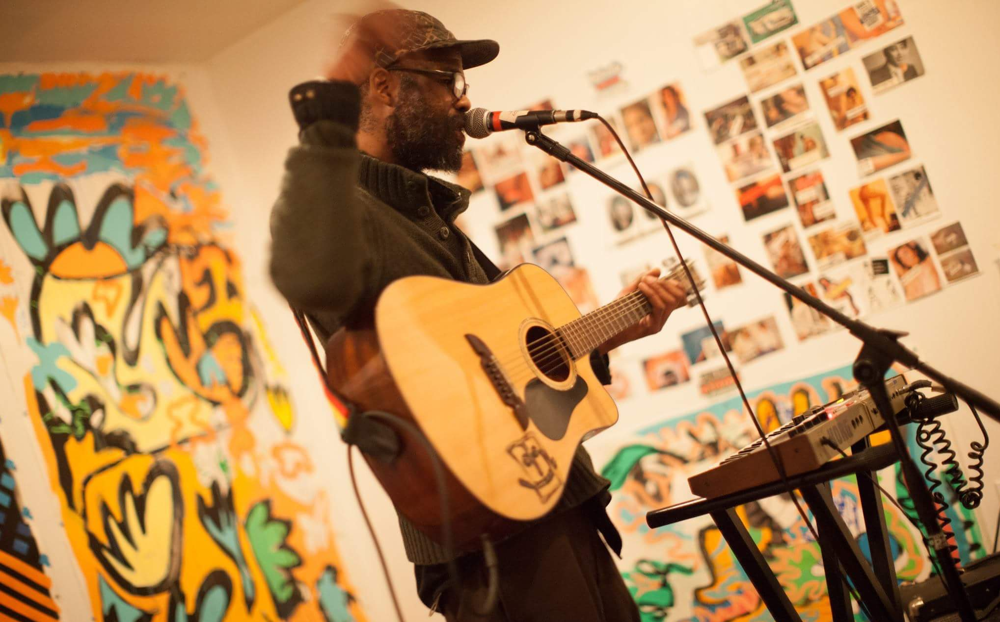

Artists:

Corvus Entertainment would like to welcome our newest member: Shayne B. Bovell. Shayne has been a Brooklyn artist for over 10 years. His undying love for art has made him one of the most influential artists in Brooklyn. From music to painting to set design, Shayne has become a creative staple in the Brooklyn artist community. Our members at Corvus Entertainment are elated to have him on our team. Click here to check out Shayne's Work
Armed with limitless potential and a fearless mind, Noel Black [aka Young Furio aka Dark Knight] has relentlessly pursued a life in music. Born on the Caribbean island of Tobago, Mr. Black is undeniably influenced by the island's unique culture and incredible diversity of musical traditions. As a boy, it was dancehall music and the artist Bounty Killer that first dominated his imagination - inspiring him to become an artist in his own right. Then, in 1996, when New York City became home, the irresistible power & energy of hip-hop fueled Brooklyn also has a major impact on his musical evolution. Noel breaks down cultural, racial and social barriers to reach new artistic levels. He created Corvus Entertainment to house artists of promise & collaborators of merit.